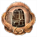
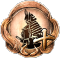
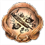
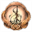

Base Game Achievements
| Achievement | Description |
|---|---|
You are Nioh 
|
[Platinum Trophy] You have unlocked all Achievements! |
Bold Wrangler 
|
Defeated Gozuki in the mission: The Village of Cursed Blossoms. |
|
Grazer Eraser |
Defeated both Gozuki and Mezuki in a single mission. Can be done in the following missions: The Village of Cursed Blossoms and The Refined Man of the Underworld. |
|
Devout Believer |
Defeated the boss of The Viper's Sanctum without breaking the statue of Shirohami. (DO NOT break any of the Snake Statues!) |
|
Feather Buster |
In the main mission A Way Out there are 2 regions with searchlights, getting spotted by the searchlight will spawn in a Red Orb nearby. Destroying the Red Orb will get rid of the spotlight. Destroying both Red Orbs in the level will unlock the achievement. You can view the guide here. |
|
Schemer |
Got Gyuki to attack the dam in the main mission Prevading Waters. You can view the guide here. |
|
Hidden Hopes |
Encountered all of the Usura-Hicho in the main mission The Frenzied Blaze. Interact with 3 swarms of frozen butterflies. You can view the guide here. |
|
Peal of Ten Thousand Bells  |
Ring all of the bells in the main mission Ruin Draws Near. You can view the guide here. |
|
Clean Sweep |
Destroyed every Amrita shard in the main mission The High-Spirited Demon. You can view the guide here. |
Seven Wonders 
|
Defeated each of the Seven Spears in the main mission Cherry Blossom Viewing in Daigo. You can view the guide here. |
Core Score 
|
Obtained your first Soul Core. |
|
Spa Healer |
Bathed in the first hot spring. |
|
The Beginning of a Samurai  |
Reached level 10. |
Full-Fledged Samurai 
|
Reached level 100. |
Sudama Swapper 
|
Exchanged gifts with a Sudama for the first time. |
|
Trinket Triumph |
Used the Kodama Bazaar. Shrine ⟶ Make Offering ⟶ Kodama Bazaar. |
|
A Weapon's Mind  |
Listened to the innermost thoughts of a Yokai Weapon. Get a Yokai Weapon to 999 familiarty, and reach max Sentience. Perform this 5 times to unlock the achievement. |
|
Help Wanted  |
Summoned an Acolyte from a Benevolent Grave 10 times. |
Lover of Letters 
|
Displayed a calligraphy scroll in your hut. |
Friend of Guardians 
|
Collected all Guardian Spirits. There are a total of 37 Guardian Spirits. |